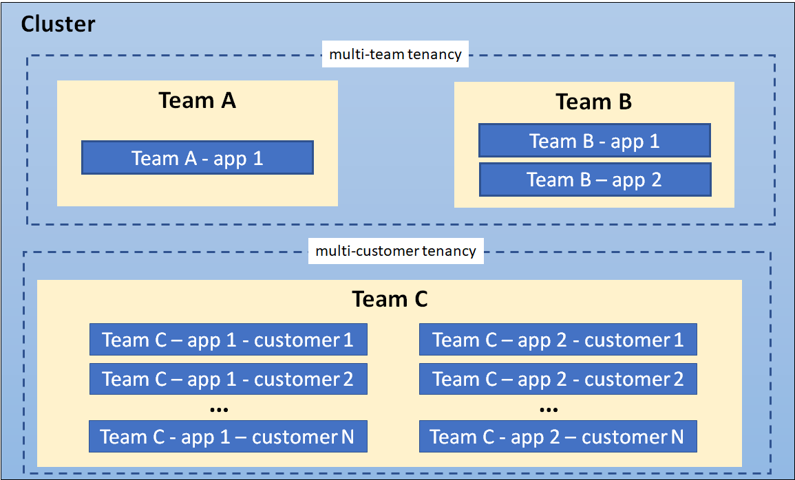

This page provides an overview of available configuration options and best practices for cluster multi-tenancy.
Sharing clusters saves costs and simplifies administration. However, sharing clusters also presents challenges such as security, fairness, and managing noisy neighbors.
Clusters can be shared in many ways. In some cases, different applications may run in the same cluster. In other cases, multiple instances of the same application may run in the same cluster, one for each end user. All these types of sharing are frequently described using the umbrella term multi-tenancy.
While Kubernetes does not have first-class concepts of end users or tenants, it provides several features to help manage different tenancy requirements. These are discussed below.
Use cases
The first step to determining how to share your cluster is understanding your use case, so you can evaluate the patterns and tools available. In general, multi-tenancy in Kubernetes clusters falls into two broad categories, though many variations and hybrids are also possible.
Multiple teams
A common form of multi-tenancy is to share a cluster between multiple teams within an organization, each of whom may operate one or more workloads. These workloads frequently need to communicate with each other, and with other workloads located on the same or different clusters.
In this scenario, members of the teams often have direct access to
Kubernetes resources via tools such as kubectl, or indirect
access through GitOps controllers or other types of release automation
tools. There is often some level of trust between members of different
teams, but Kubernetes policies such as RBAC, quotas, and network
policies are essential to safely and fairly share clusters.
Multiple customers
The other major form of multi-tenancy frequently involves a Software-as-a-Service (SaaS) vendor running multiple instances of a workload for customers. This business model is so strongly associated with this deployment style that many people call it "SaaS tenancy." However, a better term might be "multi-customer tenancy," since SaaS vendors may also use other deployment models, and this deployment model can also be used outside of SaaS.
In this scenario, the customers do not have access to the cluster; Kubernetes is invisible from their perspective and is only used by the vendor to manage the workloads. Cost optimization is frequently a critical concern, and Kubernetes policies are used to ensure that the workloads are strongly isolated from each other.
Terminology
Tenants
When discussing multi-tenancy in Kubernetes, there is no single definition for a "tenant". Rather, the definition of a tenant will vary depending on whether multi-team or multi-customer tenancy is being discussed.
In multi-team usage, a tenant is typically a team, where each team typically deploys a small number of workloads that scales with the complexity of the service. However, the definition of "team" may itself be fuzzy, as teams may be organized into higher-level divisions or subdivided into smaller teams.
By contrast, if each team deploys dedicated workloads for each new client, they are using a multi-customer model of tenancy. In this case, a "tenant" is simply a group of users who share a single workload. This may be as large as an entire company, or as small as a single team at that company.
In many cases, the same organization may use both definitions of "tenants" in different contexts. For example, a platform team may offer shared services such as security tools and databases to multiple internal “customers” and a SaaS vendor may also have multiple teams sharing a development cluster. Finally, hybrid architectures are also possible, such as a SaaS provider using a combination of per-customer workloads for sensitive data, combined with multi-tenant shared services.

Isolation
There are several ways to design and build multi-tenant solutions with Kubernetes. Each of these methods comes with its own set of tradeoffs that impact the isolation level, implementation effort, operational complexity, and cost of service.
A Kubernetes cluster consists of a control plane which runs Kubernetes software, and a data plane consisting of worker nodes where tenant workloads are executed as pods. Tenant isolation can be applied in both the control plane and the data plane based on organizational requirements.
The level of isolation offered is sometimes described using terms like “hard” multi-tenancy, which implies strong isolation, and “soft” multi-tenancy, which implies weaker isolation. In particular, "hard" multi-tenancy is often used to describe cases where the tenants do not trust each other, often from security and resource sharing perspectives (e.g. guarding against attacks such as data exfiltration or DoS). Since data planes typically have much larger attack surfaces, "hard" multi-tenancy often requires extra attention to isolating the data-plane, though control plane isolation also remains critical.
However, the terms "hard" and "soft" can often be confusing, as there is no single definition that will apply to all users. Rather, "hardness" or "softness" is better understood as a broad spectrum, with many different techniques that can be used to maintain different types of isolation in your clusters, based on your requirements.
In more extreme cases, it may be easier or necessary to forgo any cluster-level sharing at all and assign each tenant their dedicated cluster, possibly even running on dedicated hardware if VMs are not considered an adequate security boundary. This may be easier with managed Kubernetes clusters, where the overhead of creating and operating clusters is at least somewhat taken on by a cloud provider. The benefit of stronger tenant isolation must be evaluated against the cost and complexity of managing multiple clusters. The Multi-cluster SIG is responsible for addressing these types of use cases.
The remainder of this page focuses on isolation techniques used for shared Kubernetes clusters. However, even if you are considering dedicated clusters, it may be valuable to review these recommendations, as it will give you the flexibility to shift to shared clusters in the future if your needs or capabilities change.
Control plane isolation
Control plane isolation ensures that different tenants cannot access or affect each others' Kubernetes API resources.
Namespaces
In Kubernetes, a Namespace provides a mechanism for isolating groups of API resources within a single cluster. This isolation has two key dimensions:
Object names within a namespace can overlap with names in other namespaces, similar to files in folders. This allows tenants to name their resources without having to consider what other tenants are doing.
Many Kubernetes security policies are scoped to namespaces. For example, RBAC Roles and Network Policies are namespace-scoped resources. Using RBAC, Users and Service Accounts can be restricted to a namespace.
In a multi-tenant environment, a Namespace helps segment a tenant's workload into a logical and distinct management unit. In fact, a common practice is to isolate every workload in its own namespace, even if multiple workloads are operated by the same tenant. This ensures that each workload has its own identity and can be configured with an appropriate security policy.
The namespace isolation model requires configuration of several other Kubernetes resources, networking plugins, and adherence to security best practices to properly isolate tenant workloads. These considerations are discussed below.
Access controls
The most important type of isolation for the control plane is authorization. If teams or their workloads can access or modify each others' API resources, they can change or disable all other types of policies thereby negating any protection those policies may offer. As a result, it is critical to ensure that each tenant has the appropriate access to only the namespaces they need, and no more. This is known as the "Principle of Least Privilege."
Role-based access control (RBAC) is commonly used to enforce authorization in the Kubernetes control plane, for both users and workloads (service accounts). Roles and RoleBindings are Kubernetes objects that are used at a namespace level to enforce access control in your application; similar objects exist for authorizing access to cluster-level objects, though these are less useful for multi-tenant clusters.
In a multi-team environment, RBAC must be used to restrict tenants' access to the appropriate namespaces, and ensure that cluster-wide resources can only be accessed or modified by privileged users such as cluster administrators.
If a policy ends up granting a user more permissions than they need, this is likely a signal that the namespace containing the affected resources should be refactored into finer-grained namespaces. Namespace management tools may simplify the management of these finer-grained namespaces by applying common RBAC policies to different namespaces, while still allowing fine-grained policies where necessary.
Quotas
Kubernetes workloads consume node resources, like CPU and memory. In a multi-tenant environment, you can use Resource Quotas to manage resource usage of tenant workloads. For the multiple teams use case, where tenants have access to the Kubernetes API, you can use resource quotas to limit the number of API resources (for example: the number of Pods, or the number of ConfigMaps) that a tenant can create. Limits on object count ensure fairness and aim to avoid noisy neighbor issues from affecting other tenants that share a control plane.
Resource quotas are namespaced objects. By mapping tenants to namespaces, cluster admins can use quotas to ensure that a tenant cannot monopolize a cluster's resources or overwhelm its control plane. Namespace management tools simplify the administration of quotas. In addition, while Kubernetes quotas only apply within a single namespace, some namespace management tools allow groups of namespaces to share quotas, giving administrators far more flexibility with less effort than built-in quotas.
Quotas prevent a single tenant from consuming greater than their allocated share of resources hence minimizing the “noisy neighbor” issue, where one tenant negatively impacts the performance of other tenants' workloads.
When you apply a quota to namespace, Kubernetes requires you to also specify resource requests and limits for each container. Limits are the upper bound for the amount of resources that a container can consume. Containers that attempt to consume resources that exceed the configured limits will either be throttled or killed, based on the resource type. When resource requests are set lower than limits, each container is guaranteed the requested amount but there may still be some potential for impact across workloads.
Quotas cannot protect against all kinds of resource sharing, such as network traffic. Node isolation (described below) may be a better solution for this problem.
Data Plane Isolation
Data plane isolation ensures that pods and workloads for different tenants are sufficiently isolated.
Network isolation
By default, all pods in a Kubernetes cluster are allowed to communicate with each other, and all network traffic is unencrypted. This can lead to security vulnerabilities where traffic is accidentally or maliciously sent to an unintended destination, or is intercepted by a workload on a compromised node.
Pod-to-pod communication can be controlled using Network Policies, which restrict communication between pods using namespace labels or IP address ranges. In a multi-tenant environment where strict network isolation between tenants is required, starting with a default policy that denies communication between pods is recommended with another rule that allows all pods to query the DNS server for name resolution. With such a default policy in place, you can begin adding more permissive rules that allow for communication within a namespace. It is also recommended not to use empty label selector '{}' for namespaceSelector field in network policy definition, in case traffic need to be allowed between namespaces. This scheme can be further refined as required. Note that this only applies to pods within a single control plane; pods that belong to different virtual control planes cannot talk to each other via Kubernetes networking.
Namespace management tools may simplify the creation of default or common network policies. In addition, some of these tools allow you to enforce a consistent set of namespace labels across your cluster, ensuring that they are a trusted basis for your policies.
Warning:
Network policies require a CNI plugin that supports the implementation of network policies. Otherwise, NetworkPolicy resources will be ignored.
More advanced network isolation may be provided by service meshes, which provide OSI Layer 7 policies based on workload identity, in addition to namespaces. These higher-level policies can make it easier to manage namespace-based multi-tenancy, especially when multiple namespaces are dedicated to a single tenant. They frequently also offer encryption using mutual TLS, protecting your data even in the presence of a compromised node, and work across dedicated or virtual clusters. However, they can be significantly more complex to manage and may not be appropriate for all users.
Storage isolation
Kubernetes offers several types of volumes that can be used as persistent storage for workloads. For security and data-isolation, dynamic volume provisioning is recommended and volume types that use node resources should be avoided.
StorageClasses allow you to describe custom "classes" of storage offered by your cluster, based on quality-of-service levels, backup policies, or custom policies determined by the cluster administrators.
Pods can request storage using a PersistentVolumeClaim. A PersistentVolumeClaim is a namespaced resource, which enables isolating portions of the storage system and dedicating it to tenants within the shared Kubernetes cluster. However, it is important to note that a PersistentVolume is a cluster-wide resource and has a lifecycle independent of workloads and namespaces.
For example, you can configure a separate StorageClass for each
tenant and use this to strengthen isolation. If a StorageClass is
shared, you should set a reclaim
policy of Delete to ensure that a PersistentVolume
cannot be reused across different namespaces.
Sandboxing containers
Kubernetes pods are composed of one or more containers that execute on worker nodes. Containers utilize OS-level virtualization and hence offer a weaker isolation boundary than virtual machines that utilize hardware-based virtualization.
In a shared environment, unpatched vulnerabilities in the application and system layers can be exploited by attackers for container breakouts and remote code execution that allow access to host resources. In some applications, like a Content Management System (CMS), customers may be allowed the ability to upload and execute untrusted scripts or code. In either case, mechanisms to further isolate and protect workloads using strong isolation are desirable.
Sandboxing provides a way to isolate workloads running in a shared
cluster. It typically involves running each pod in a separate execution
environment such as a virtual machine or a userspace kernel. Sandboxing
is often recommended when you are running untrusted code, where
workloads are assumed to be malicious. Part of the reason this type of
isolation is necessary is because containers are processes running on a
shared kernel; they mount file systems like /sys and
/proc from the underlying host, making them less secure
than an application that runs on a virtual machine which has its own
kernel. While controls such as seccomp, AppArmor, and SELinux can be
used to strengthen the security of containers, it is hard to apply a
universal set of rules to all workloads running in a shared cluster.
Running workloads in a sandbox environment helps to insulate the host
from container escapes, where an attacker exploits a vulnerability to
gain access to the host system and all the processes/files running on
that host.
Virtual machines and userspace kernels are two popular approaches to sandboxing.
Node Isolation
Node isolation is another technique that you can use to isolate tenant workloads from each other. With node isolation, a set of nodes is dedicated to running pods from a particular tenant and co-mingling of tenant pods is prohibited. This configuration reduces the noisy tenant issue, as all pods running on a node will belong to a single tenant. The risk of information disclosure is slightly lower with node isolation because an attacker that manages to escape from a container will only have access to the containers and volumes mounted to that node.
Although workloads from different tenants are running on different nodes, it is important to be aware that the kubelet and (unless using virtual control planes) the API service are still shared services. A skilled attacker could use the permissions assigned to the kubelet or other pods running on the node to move laterally within the cluster and gain access to tenant workloads running on other nodes. If this is a major concern, consider implementing compensating controls such as seccomp, AppArmor or SELinux or explore using sandboxed containers or creating separate clusters for each tenant.
Node isolation is a little easier to reason about from a billing standpoint than sandboxing containers since you can charge back per node rather than per pod. It also has fewer compatibility and performance issues and may be easier to implement than sandboxing containers. For example, nodes for each tenant can be configured with taints so that only pods with the corresponding toleration can run on them. A mutating webhook could then be used to automatically add tolerations and node affinities to pods deployed into tenant namespaces so that they run on a specific set of nodes designated for that tenant.
Node isolation can be implemented using pod node selectors.
Additional Considerations
This section discusses other Kubernetes constructs and patterns that are relevant for multi-tenancy.
API Priority and Fairness
API priority and fairness is a Kubernetes feature that allows you to assign a priority to certain pods running within the cluster. When an application calls the Kubernetes API, the API server evaluates the priority assigned to pod. Calls from pods with higher priority are fulfilled before those with a lower priority. When contention is high, lower priority calls can be queued until the server is less busy or you can reject the requests.
Using API priority and fairness will not be very common in SaaS environments unless you are allowing customers to run applications that interface with the Kubernetes API, for example, a controller.
Quality-of-Service (QoS)
When you’re running a SaaS application, you may want the ability to offer different Quality-of-Service (QoS) tiers of service to different tenants. For example, you may have freemium service that comes with fewer performance guarantees and features and a for-fee service tier with specific performance guarantees. Fortunately, there are several Kubernetes constructs that can help you accomplish this within a shared cluster, including network QoS, storage classes, and pod priority and preemption. The idea with each of these is to provide tenants with the quality of service that they paid for. Let’s start by looking at networking QoS.
Typically, all pods on a node share a network interface. Without network QoS, some pods may consume an unfair share of the available bandwidth at the expense of other pods. The Kubernetes bandwidth plugin creates an extended resource for networking that allows you to use Kubernetes resources constructs, i.e. requests/limits, to apply rate limits to pods by using Linux tc queues. Be aware that the plugin is considered experimental as per the Network Plugins documentation and should be thoroughly tested before use in production environments.
For storage QoS, you will likely want to create different storage classes or profiles with different performance characteristics. Each storage profile can be associated with a different tier of service that is optimized for different workloads such IO, redundancy, or throughput. Additional logic might be necessary to allow the tenant to associate the appropriate storage profile with their workload.
Finally, there’s pod priority and preemption where you can assign priority values to pods. When scheduling pods, the scheduler will try evicting pods with lower priority when there are insufficient resources to schedule pods that are assigned a higher priority. If you have a use case where tenants have different service tiers in a shared cluster e.g. free and paid, you may want to give higher priority to certain tiers using this feature.
DNS
Kubernetes clusters include a Domain Name System (DNS) service to provide translations from names to IP addresses, for all Services and Pods. By default, the Kubernetes DNS service allows lookups across all namespaces in the cluster.
In multi-tenant environments where tenants can access pods and other Kubernetes resources, or where stronger isolation is required, it may be necessary to prevent pods from looking up services in other Namespaces. You can restrict cross-namespace DNS lookups by configuring security rules for the DNS service. For example, CoreDNS (the default DNS service for Kubernetes) can leverage Kubernetes metadata to restrict queries to Pods and Services within a namespace. For more information, read an example of configuring this within the CoreDNS documentation.
When a Virtual Control Plane per tenant model is used, a DNS service must be configured per tenant or a multi-tenant DNS service must be used. Here is an example of a customized version of CoreDNS that supports multiple tenants.
Operators
Operators are Kubernetes controllers that manage applications. Operators can simplify the management of multiple instances of an application, like a database service, which makes them a common building block in the multi-consumer (SaaS) multi-tenancy use case.
Operators used in a multi-tenant environment should follow a stricter set of guidelines. Specifically, the Operator should:
- Support creating resources within different tenant namespaces, rather than just in the namespace in which the Operator is deployed.
- Ensure that the Pods are configured with resource requests and limits, to ensure scheduling and fairness.
- Support configuration of Pods for data-plane isolation techniques such as node isolation and sandboxed containers.
Implementations
There are two primary ways to share a Kubernetes cluster for multi-tenancy: using Namespaces (that is, a Namespace per tenant) or by virtualizing the control plane (that is, virtual control plane per tenant).
In both cases, data plane isolation, and management of additional considerations such as API Priority and Fairness, is also recommended.
Namespace isolation is well-supported by Kubernetes, has a negligible resource cost, and provides mechanisms to allow tenants to interact appropriately, such as by allowing service-to-service communication. However, it can be difficult to configure, and doesn't apply to Kubernetes resources that can't be namespaced, such as Custom Resource Definitions, Storage Classes, and Webhooks.
Control plane virtualization allows for isolation of non-namespaced resources at the cost of somewhat higher resource usage and more difficult cross-tenant sharing. It is a good option when namespace isolation is insufficient but dedicated clusters are undesirable, due to the high cost of maintaining them (especially on-prem) or due to their higher overhead and lack of resource sharing. However, even within a virtualized control plane, you will likely see benefits by using namespaces as well.
The two options are discussed in more detail in the following sections.
Namespace per tenant
As previously mentioned, you should consider isolating each workload in its own namespace, even if you are using dedicated clusters or virtualized control planes. This ensures that each workload only has access to its own resources, such as ConfigMaps and Secrets, and allows you to tailor dedicated security policies for each workload. In addition, it is a best practice to give each namespace names that are unique across your entire fleet (that is, even if they are in separate clusters), as this gives you the flexibility to switch between dedicated and shared clusters in the future, or to use multi-cluster tooling such as service meshes.
Conversely, there are also advantages to assigning namespaces at the tenant level, not just the workload level, since there are often policies that apply to all workloads owned by a single tenant. However, this raises its own problems. Firstly, this makes it difficult or impossible to customize policies to individual workloads, and secondly, it may be challenging to come up with a single level of "tenancy" that should be given a namespace. For example, an organization may have divisions, teams, and subteams - which should be assigned a namespace?
One possible approach is to organize your namespaces into hierarchies, and share certain policies and resources between them. This could include managing namespace labels, namespace lifecycles, delegated access, and shared resource quotas across related namespaces. These capabilities can be useful in both multi-team and multi-customer scenarios.
Virtual control plane per tenant
Another form of control-plane isolation is to use Kubernetes extensions to provide each tenant a virtual control-plane that enables segmentation of cluster-wide API resources. Data plane isolation techniques can be used with this model to securely manage worker nodes across tenants.
The virtual control plane based multi-tenancy model extends namespace-based multi-tenancy by providing each tenant with dedicated control plane components, and hence complete control over cluster-wide resources and add-on services. Worker nodes are shared across all tenants, and are managed by a Kubernetes cluster that is normally inaccessible to tenants. This cluster is often referred to as a super-cluster (or sometimes as a host-cluster). Since a tenant’s control-plane is not directly associated with underlying compute resources it is referred to as a virtual control plane.
A virtual control plane typically consists of the Kubernetes API server, the controller manager, and the etcd data store. It interacts with the super cluster via a metadata synchronization controller which coordinates changes across tenant control planes and the control plane of the super-cluster.
By using per-tenant dedicated control planes, most of the isolation problems due to sharing one API server among all tenants are solved. Examples include noisy neighbors in the control plane, uncontrollable blast radius of policy misconfigurations, and conflicts between cluster scope objects such as webhooks and CRDs. Hence, the virtual control plane model is particularly suitable for cases where each tenant requires access to a Kubernetes API server and expects the full cluster manageability.
The improved isolation comes at the cost of running and maintaining an individual virtual control plane per tenant. In addition, per-tenant control planes do not solve isolation problems in the data plane, such as node-level noisy neighbors or security threats. These must still be addressed separately.